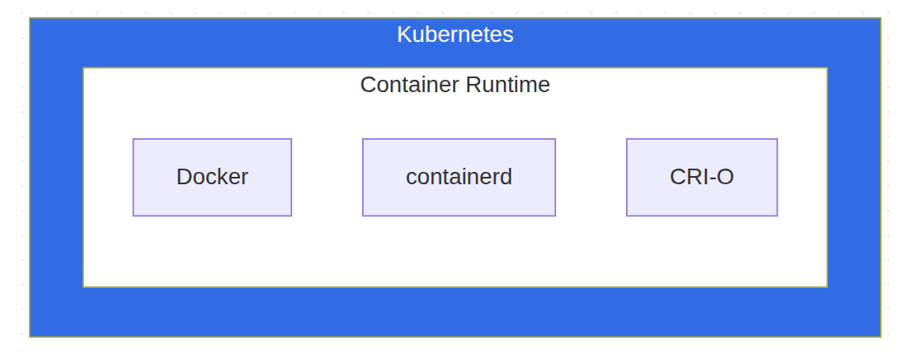

Kubernetes 기초 - 왜 쿠버네티스인가?
1. 개요
Docker만 사용할 때의 문제점
Docker만으로 컨테이너를 운영하면 다음과 같은 문제들이 발생한다:
| 문제 | 설명 |
|---|---|
| 스케일링 | 트래픽 증가 시 수동으로 컨테이너를 올리고 연결해야 함 |
| 고가용성 | 컨테이너가 죽으면 직접 확인하고 다시 살려야 함 |
| 서비스 디스커버리 | 여러 컨테이너가 서로를 어떻게 찾을 것인가? |
| 로드밸런싱 | 트래픽 분산이 없으면 여러 컨테이너를 묶는 의미가 없음 |
| 배포 | 무중단 배포를 어떻게 구현할 것인가? |
Kubernetes는 선언적 구성을 통해 이 문제들을 해결한다.
1.1 Kubernetes란?
컨테이너화된 워크로드와 서비스를 관리하기 위한 오픈소스 오케스트레이션 플랫폼
명령형 vs 선언적 구성
Docker (명령형)
docker run -d --name web -p 80:80 nginx
→ “web이라는 컨테이너에 nginx 이미지를 올려서 실행하고 포트는 80:80으로 열어”
Kubernetes (선언적)
# "나는 nginx 컨테이너가 3개 실행되길 원해"
spec:
replicas: 3
1.2 Docker와의 관계
Kubernetes는 컨테이너 런타임 위에서 동작하며, Docker는 그 런타임 중 하나다.

2. 아키텍처 이해
2.1 클러스터 구조
Kubernetes 클러스터는 Control Plane과 Worker Node로 구성된다.

Control Plane 컴포넌트
| ../../../ | |
|---|---|
| API Server | 모든 통신의 중심점. kubectl 명령을 받음 |
| etcd | 클러스터의 모든 상태를 저장하는 분산 key-value 저장소 |
| Scheduler | 새 Pod를 어느 노드에 배치할지 결정 |
| Controller Manager | 클러스터 상태를 원하는 대로 유지 |
Worker Node 컴포넌트
| 컴포넌트 | 역할 |
|---|---|
| kubelet | 노드의 에이전트. Pod의 생성/삭제를 담당 |
핵심 정리
- Kubernetes가 필요한 이유: Docker만으로는 스케일링, 고가용성, 서비스 디스커버리, 로드밸런싱, 무중단 배포가 어렵다
- 선언적 구성: “어떻게”가 아닌 “무엇을” 원하는지 선언하면 Kubernetes가 알아서 처리
- 아키텍처: Control Plane이 전체를 관리하고, Worker Node에서 실제 워크로드가 실행됨